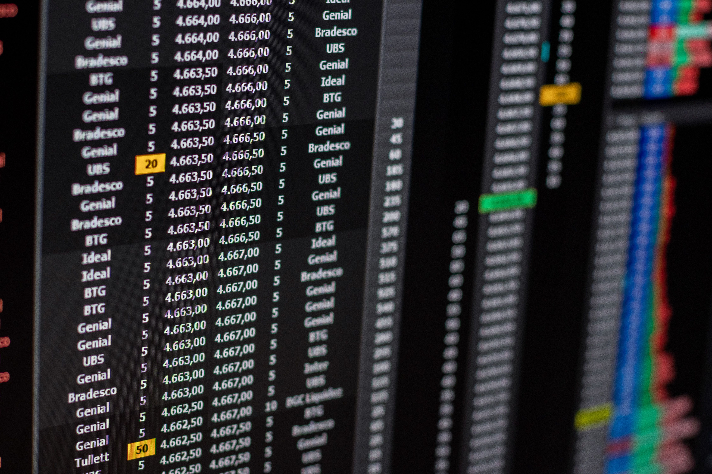

Investimentos
Conheça renda fixa, ações e Tesouro Direto.
Finanças pessoais sem complicação
Este blog tem o objetivo de explicar finanças de forma simples: como investir, organizar o orçamento e entender a economia. Aqui você encontra conteúdos para quem está começando e quer fazer o dinheiro render.

Conheça renda fixa, ações e Tesouro Direto.
Aprenda a montar orçamento e reserva de emergência.
Entenda Selic, inflação e dólar.